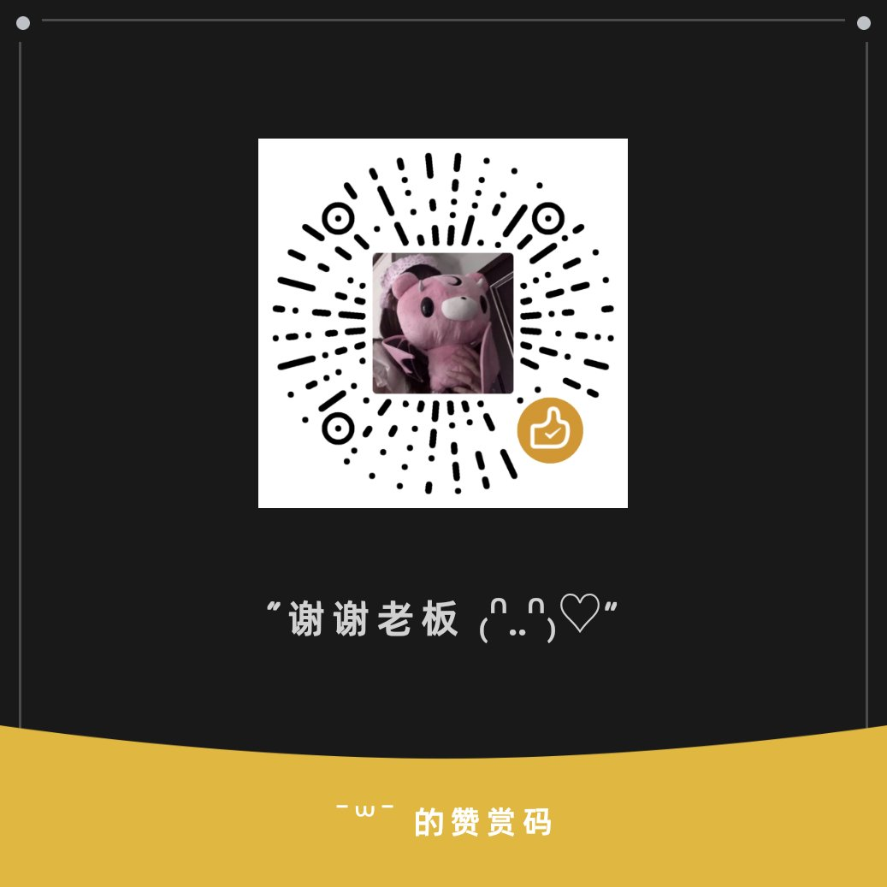

Yumeoibito
@Yumeoibito76
RT @2_haru_ovo: 🔝不定期重发
hi 我是未成椿 08 身心女 メンへラ
💞穿孔/喝酒/画画/打舞萌/拍照
长期接占卜20一问 200包月 需要请dm
⚠️不收门槛 不接非绿纯绿线下 不要问我接不接这些 看到就拉黑
互转互fo欢迎呀🫶🏻
提问箱https…

未成椿
@2_haru_ovo
🔝不定期重发
hi 我是未成椿 08 身心女 メンへラ
💞穿孔/喝酒/画画/打舞萌/拍照
长期接占卜20一问 200包月 需要请dm
⚠️不收门槛 不接非绿纯绿线下 不要问我接不接这些 看到就拉黑
互转互fo欢迎呀🫶🏻
提问箱https://t.co/Eaj60Iiq0R
私信看到会回复 喜欢我请打钱谢谢喵 https://t.co/TxGMwm9RgW